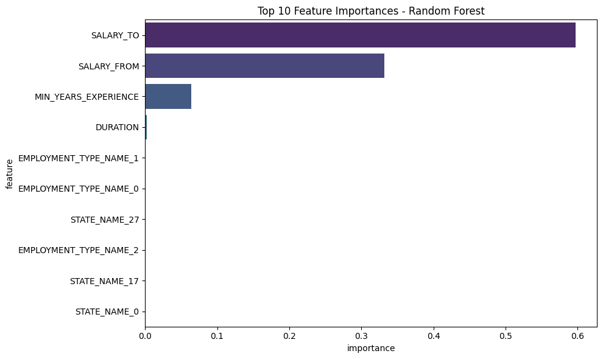

Used it for figuring out some plotting issues in the last cell.
3 Note to Instructor:
I used Generalized Linear Regression considering Module05 Lab02 Section4.
from pyspark.sql import SparkSessionimport pandas as pdimport plotly.express as pximport plotly.io as pioimport numpy as npnp.random.seed(42)pio.renderers.default ="notebook+notebook_connected+vscode"# Initialize Spark Sessionspark = SparkSession.builder.appName("LightcastData").getOrCreate()# Load Datadf = spark.read.option("header", "true").option("inferSchema", "true").option("multiLine","true").option("escape", "\"").csv("./data/lightcast_job_postings.csv")# # Show Schema and Sample Data# print("---This is Diagnostic check, No need to print it in the final doc---")# # df.printSchema() # comment this line when rendering the submission# df.show(5)
[Stage 61:> (0 + 1) / 1]
4 Feature Engineering
from pyspark.sql.functions import col, powfrom pyspark.ml.feature import StringIndexer, OneHotEncoder, VectorAssemblerfrom pyspark.ml import Pipelinefrom pyspark.ml.regression import GeneralizedLinearRegression# Drop missing valueskey_features = ["DURATION", "SALARY_FROM", "SALARY_TO", "MIN_YEARS_EXPERIENCE","EMPLOYMENT_TYPE_NAME", "STATE_NAME", "SALARY"]df_clean = df.dropna(subset=key_features)# Categorical transformationscat_cols = ["EMPLOYMENT_TYPE_NAME", "STATE_NAME"]indexers = [StringIndexer(inputCol=c, outputCol=c+"_IDX", handleInvalid="keep") for c in cat_cols]encoders = [OneHotEncoder(inputCol=c+"_IDX", outputCol=c+"_OHE", dropLast=True) for c in cat_cols]# Assemble featurescont_cols = ["DURATION", "SALARY_FROM", "SALARY_TO", "MIN_YEARS_EXPERIENCE"]assembler_inputs = cont_cols + [c+"_OHE"for c in cat_cols]assembler = VectorAssembler( inputCols=assembler_inputs, outputCol="features")pipeline = Pipeline(stages=indexers + encoders + [assembler])df_transformed = pipeline.fit(df_clean).transform(df_clean)# Train-test split (80/20)train_df, test_df = df_transformed.randomSplit([0.8, 0.2], seed=42)# 80% for training and 20% for testing to ensure enough data for model training and validation.# Create polynomial feature ( by squaring MIN_YEARS_EXPERIENCE)df_poly = df_transformed.withColumn("MIN_YEARS_EXPERIENCE_SQ", pow(col("MIN_YEARS_EXPERIENCE"), 2))# Assemble polynomial features into new vectorpoly_assembler = VectorAssembler( inputCols=["features", "MIN_YEARS_EXPERIENCE_SQ"], outputCol="features_poly")df_final = poly_assembler.transform(df_poly)df_final.show(5)
The Generalized Linear Regression model gave very high accuracy (R² â 0.9991), explaining almost all variation in salaries. Prediction errors were very small (RMSE â 1269, MAE â 439). As expected, more years of experience are linked with higher pay, and job type and location also matter. Looking at coefficients, some predictors (like the second and third features) are highly significant with very low pâvalues, while many others have large standard errors and are not statistically meaningful. This shows the presence of multicollinearity: several features are strongly correlated, so the model predicts well overall but individual coefficient estimates are unstable.
6 Polynomial Regression model
from pyspark.ml.regression import GeneralizedLinearRegression# train/testtrain_poly, test_poly = df_final.randomSplit([0.8, 0.2], seed=42)# Linear Regression model using polynomial featureslr_poly = GeneralizedLinearRegression( family="gaussian", link="identity", featuresCol="features_poly", labelCol="SALARY", maxIter=10, regParam=0.3)# Fit model on training datalr_poly_model = lr_poly.fit(train_poly)from pyspark.ml.evaluation import RegressionEvaluatorpoly_predictions = lr_poly_model.transform(test_poly)evaluator = RegressionEvaluator(labelCol="SALARY", predictionCol="prediction")print("Polynomial Regression Results")print("Coefficients:", lr_poly_model.coefficients)print("Intercept:", lr_poly_model.intercept)print("R²:", evaluator.setMetricName("r2").evaluate(poly_predictions))print("RMSE:", evaluator.setMetricName("rmse").evaluate(poly_predictions))print("MAE:", evaluator.setMetricName("mae").evaluate(poly_predictions))# Coefficient statisticspoly_summary = lr_poly_model.summarytry: coefs = lr_poly_model.coefficients.toArray().tolist() se = poly_summary.coefficientStandardErrors tvals = poly_summary.tValues pvals = poly_summary.pValues coef_poly_df = spark.createDataFrame( [ (float(coefs[i]), float(se[i]), float(tvals[i]), float(pvals[i]),float(coefs[i] -1.96*se[i]), float(coefs[i] +1.96*se[i]))for i inrange(len(coefs)) ], ["Coefficient", "StdError", "tValue", "pValue", "CI_lower", "CI_upper"] ) coef_poly_df.show(truncate=False)exceptExceptionas e:# Actualy not needed for GLR but I added it when I was previously using LR.print("Coefficient statistics not available (L-BGFS fallback):", str(e))
The Polynomial Regression model also achieved very high accuracy (R² â 0.9991), explaining nearly all variation in salaries. Errors were very small (RMSE â 1269, MAE â 439), almost the same as the linear model. The results again confirm that experience, job type, and location strongly influence pay. Looking at coefficients, a few predictors (like the second and third features) are highly significant with very low pâvalues, but many others show very large standard errors and are not statistically reliable. This again points to multicollinearity: several features overlap in information, so while the model predicts salaries very well, the individual coefficient estimates remain unstable
Random Forest Results
R²: 0.9724973538145091
RMSE: 7022.572482052369
MAE: 4380.591032239985
7.1 Feature Importance Plot
import pandas as pdimport seaborn as snsimport matplotlib.pyplot as plt# OHE vector sizeohe_sizes = {c+"_OHE": df_transformed.select(c+"_OHE").head()[0].size for c in cat_cols}# Expanded feature namesexpanded_feature_names = []for col in cont_cols: expanded_feature_names.append(col)for c in cat_cols:for i inrange(ohe_sizes[c+"_OHE"]): expanded_feature_names.append(f"{c}_{i}")importances = rf_model.featureImportances.toArray()feat_imp = pd.DataFrame({"feature": expanded_feature_names,"importance": importances})# Top 10 plottop10 = feat_imp.sort_values("importance", ascending=False).head(10)plt.figure(figsize=(10,6))sns.barplot(x="importance", y="feature", data=top10, palette="viridis")plt.title("Top 10 Feature Importances - Random Forest")plt.tight_layout()plt.savefig("_output/rf_feature_importance.png")plt.show()plt.close()
/tmp/ipykernel_4414/192427344.py:28: FutureWarning:
Passing `palette` without assigning `hue` is deprecated and will be removed in v0.14.0. Assign the `y` variable to `hue` and set `legend=False` for the same effect.

7.2 Inference
The Random Forest model explained about 97% of salary variation (R² â 0.97). But its errors were higher (RMSE â 7023, MAE â 4381) compared to linear models. From feature importance, we see that SALARY_TO and SALARY_FROM are the main drivers, with years of experience adding some effect. Other features like job type and state have very small impact. This means the model predicts well, but it mostly depends on salary range fields and gives less extra insight.
8 Model Comparison
import pandas as pdimport numpy as npfrom pyspark.ml.evaluation import RegressionEvaluator# Predictions for all three modelslr_predictions = lr_model.transform(test_df)poly_predictions = lr_poly_model.transform(test_poly)rf_predictions = rf_model.transform(test_rf)evaluator = RegressionEvaluator(labelCol="SALARY", predictionCol="prediction")# Linear Regression metricslr_r2 = evaluator.setMetricName("r2").evaluate(lr_predictions)lr_rmse = evaluator.setMetricName("rmse").evaluate(lr_predictions)lr_mae = evaluator.setMetricName("mae").evaluate(lr_predictions)# AIC for Linear Regressionlr_aic = lr_model.summary.aicprint(f"Linear Regression AIC: {lr_aic}")# Polynomial Regression metricspoly_r2 = evaluator.setMetricName("r2").evaluate(poly_predictions)poly_rmse = evaluator.setMetricName("rmse").evaluate(poly_predictions)poly_mae = evaluator.setMetricName("mae").evaluate(poly_predictions)# AIC for Polynomial Regressionpoly_aic = lr_poly_model.summary.aicprint(f"Polynomial Regression AIC: {poly_aic}")# AIC is not directly available for Random Forestrf_aic =None# BIC calculation for Linear and Polynomial modelsdef calculate_bic(model_summary, n_obs):"""Calculate BIC for PySpark GeneralizedLinearRegression models"""try: k =len(model_summary.coefficientStandardErrors) +1 deviance = model_summary.deviance dispersion = model_summary.dispersion# Log Likelihood calculation log_likelihood =-0.5* (n_obs * np.log(2* np.pi) + n_obs * np.log(dispersion) + deviance/dispersion)# BIC calculation bic = k * np.log(n_obs) -2* log_likelihoodreturn bicexceptExceptionas e:print(f"BIC calculation failed: {str(e)}")returnNonen_obs = test_df.count()lr_bic = calculate_bic(lr_model.summary, n_obs)poly_bic = calculate_bic(lr_poly_model.summary, n_obs)print(f"Linear Regression BIC: {lr_bic}")print(f"Polynomial Regression BIC: {poly_bic}")comparison_data = {'Model': ['Generalized Linear Regression', 'Polynomial Regression', 'Random Forest'],'R²': [lr_r2, poly_r2, r2],'RMSE': [lr_rmse, poly_rmse, rmse],'MAE': [lr_mae, poly_mae, mae],'AIC': [lr_aic, poly_aic, 'N/A'],'BIC': [lr_bic, poly_bic, 'N/A']}comparison_df = pd.DataFrame(comparison_data)print("Model Comparison:")print(comparison_df.to_string(index=False))
[Stage 117:> (0 + 1) / 1] [Stage 118:> (0 + 1) / 1] [Stage 119:> (0 + 1) / 1] /tmp/ipykernel_4414/3842274766.py:47: FutureWarning:
Passing `palette` without assigning `hue` is deprecated and will be removed in v0.14.0. Assign the `y` variable to `hue` and set `legend=False` for the same effect.
8.2 Inference
Both the Generalized Linear Regression and Polynomial Regression models performed almost identically, with R² â 0.9991 and very low errors (RMSE â 1269, MAE â 439). Their AIC and BIC values are also very close, showing no real advantage of adding polynomial terms. The Random Forest model explained less variation (R² â 0.97) and had much higher errors (RMSE â 7023, MAE â 4381). Since AIC and BIC are not available for Random Forest, comparison is based only on accuracy metrics. Overall, the linear models clearly outperform Random Forest for this dataset. Between them, the simpler Generalized Linear Regression is preferable, as it achieves the same accuracy with lower complexity and easier interpretation.